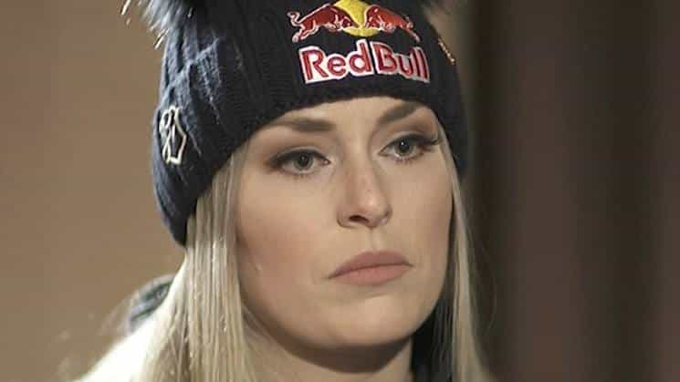
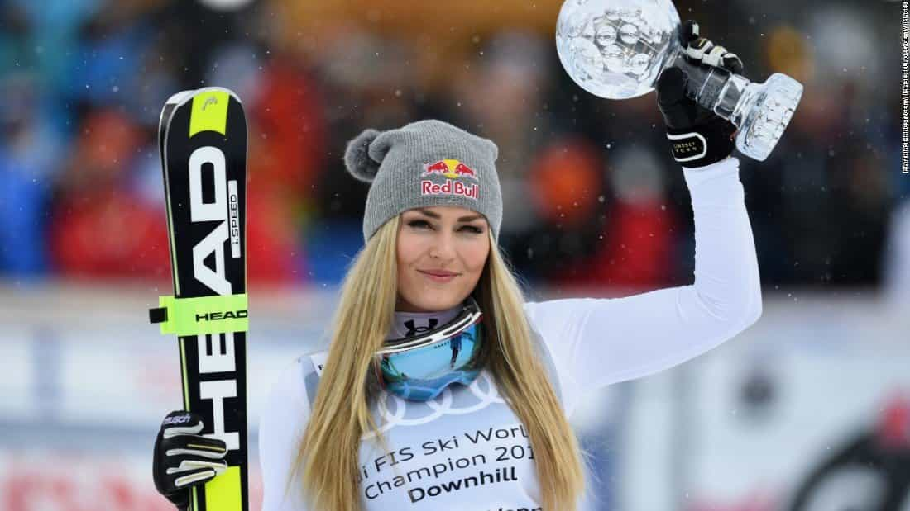

American skiing star Lindsey Vonn has withdrawn from her Sunday events at the World Cup in Switzerland after suffering a back injury during a super-G race on Saturday.
The injury occurred two days after she criticized President Donald Trump in an interview about the upcoming Winter Olympics in South Korea.
“I am extremely disappointed,” Vonn tweeted Sunday, “but my biggest goal this season is the Olympics and I need to take care of myself now so I can be ready for next week, and more importantly, for February.”
Unfortunately I will not be able to race today. I am extremely disappointed but my biggest goal this season is the Olympics and I need to take care of myself now so I can be ready for next week, and more importantly, for February. As always, thank you for the well wishes ❤️🙏🏻
— lindsey vonn (@lindseyvonn) December 10, 2017
On Saturday, Vonn crossed the finish line in obvious distress, almost one second behind the then-leader, and slumped to the snow.
Vonn’s tentative run after jarring her back early on placed her 24th, trailing 1.56 seconds behind the surprise winner, Jasmine Flury of Switzerland. The race was shortened due to strong winds higher up the mountain.

Vonn stayed in the finish house to be treated, and one hour later limped slowly into a waiting car to be driven from the St. Moritz course.
Looks like i have an acute facet (spinal joint) dysfunction. I got compressed on the 6th gate and my back seized up. Rested and had a lot of therapy tonight. We will see how I feel tomorrow and then decide if I will race. Thanks for the support 🙏🏻
— lindsey vonn (@lindseyvonn) December 9, 2017
Minutes earlier, her father Alan Kildow told the Associated Press his daughter was “OK.”
Vonn tweeted Saturday that she had suffered an “acute facet (spinal joint) dysfunction.”
Saturday’s race was interrupted several times by gusts lifting flurries of snow, and Vonn was left standing at the gate as the No. 4 starter during the first delay of about three minutes. She stayed warm with a thick jacket draped on her shoulders.
Vonn did not speak with media or fans before getting into the car, and wore the hood of a United States team jacket up to shield her face from television cameras tracking her.
The two-time Olympic medalist told CNN in an interview that aired Thursday that she would “absolutely not” visit the White House if the United States Olympic team gets a traditional post-games invitation.
“I was asked my opinion and I gave it,” Vonn told reporters Friday. “I mean, it’s not necessarily my place to be sticking my nose in politics, but as an athlete I do have a voice.”
Looking ahead to the Feb. 9-25 Pyeongchang Winter Games in South Korea, Vonn told CNN she hoped “to represent the people of the United States, not the president.”
Though Vonn did not mention Trump by name, the athlete activists she said Friday she admired included Colin Kaepernick. The president has responded to the NFL quarterback by posting confrontational messages on Twitter.

“People like Billie Jean King and Arthur Ashe and Colin Kaepernick,” Vonn said in the post-race interview zone. “There’s definitely been a lot of people that have made their voice heard and made a positive impact.”
“I’m not trying to be negative in any way, I’m trying to be positive,” said the 33-year-old Vonn, whose 77 World Cup race wins leads the women’s all-time list. “All those people have made a positive impact and hopefully my message does as well.”
Vonn told CNN she took the Olympics and “what walking under our flag means in the opening ceremony” very seriously.
“I want to represent our country well,” said the 33-year-old skier, who also has seven career world championships medals, including two gold. “I don’t think that there are a lot of people currently in our government that do that.”